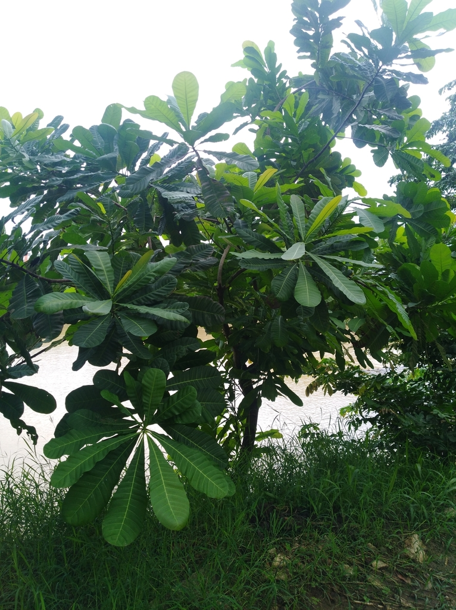

Una guía básica sobre este majestuoso árbol tropical
Anacardium excelsum
El árbol de Caracolí, conocido científicamente como Anacardium excelsum, es una especie majestuosa que puede alcanzar alturas superiores a los 40 metros. Presenta un tronco recto, robusto y de gran diámetro, con una corteza de color gris claro y textura rugosa. Su copa es amplia y densa, lo que proporciona sombra generosa. Las hojas son simples, alternas, de gran tamaño y forma ovalada, con un color verde intenso y textura coriácea. Durante su ciclo reproductivo, desarrolla pequeñas flores de color blanco a rosado agrupadas en racimos, y frutos en forma de nueces alargadas parecidas a los del marañón, aunque no comestibles en este caso.
El Caracolí es un árbol resistente que se adapta bien a diversos suelos, aunque prefiere aquellos profundos, húmedos y bien drenados. Requiere de climas cálidos y tropicales para desarrollarse plenamente, siendo muy sensible a las heladas. Se recomienda plantarlo en espacios amplios debido a su tamaño potencial y sistema radicular extenso. Aunque puede tolerar cortos periodos de sequía, se beneficia de riegos regulares durante sus primeros años de vida para asegurar un crecimiento saludable. No necesita muchos cuidados una vez establecido, y responde bien a podas ligeras que favorezcan la formación de una copa armónica.
El árbol de Caracolí es valorado principalmente por su madera, la cual es semipesada, fácil de trabajar y utilizada en carpintería, ebanistería, fabricación de muebles, puertas y estructuras rurales. En muchas regiones también se planta como árbol de sombra debido a su frondosa copa, y es habitual verlo en plazas, parques y caminos rurales. A nivel ecológico, su presencia favorece el control de la erosión del suelo y brinda hábitat a diversas especies de aves, insectos y pequeños mamíferos. Aunque sus frutos no se consumen, el árbol tiene un rol importante en el equilibrio del ecosistema donde crece.